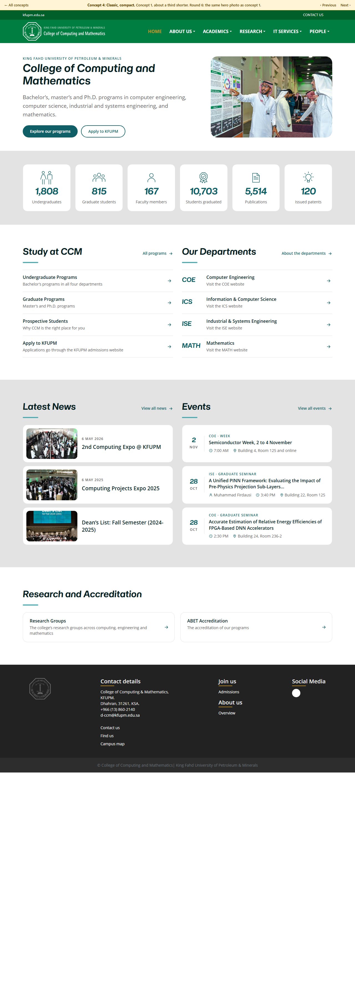

Your round 5 notes, applied. The FAST Matrix is gone from the home page. Three options are left, each with its own idea, so features can be picked from each: concept 1, unchanged since you said it's good; concept 3, the thin-lines look of 3A and 3B without the pattern (3A and 3B were the same page apart from where the pattern sat, so without it they are one option); and concept 4, now with the same hero photo as concept 1. Each preview is the full home page between today's header and footer. Compare with today's home page.
What Differs
In all three: the same order and hero photo, the numbers with icons from the official KFUPM icon set, news and events of the same length, section titles in Title Case, and no FAST Matrix.
| Part | 1 Classic | 3 With lines | 4 Compact |
|---|---|---|---|
| Hero | The name on the left, the photo on the right | As 1 | Lower: a smaller name and photo |
| Numbers | Six boxes in a grey band | One outlined strip | As 1 |
| Study | Three photo cards | The same cards without frames | A short link list, beside the departments |
| Departments | Four department boxes | No boxes: a turquoise line over each department | A short link list, beside study |
| News and events | Four at a time, with page numbers | As 1, as lists with a line between items | The three latest of each |
| Research | Two photo cards | The same cards without frames | Two links |
| Between sections | Grey and white bands | All white, a thin line between sections | Grey and white bands |
| Length of the new part (computer / phone) | 3,340 / 4,930 px | 3,340 / 4,620 px | 2,240 / 3,890 px, about a third shorter |
-


Concept 1 · "good" in round 5
Classic, made clear
The name beside a photo, the numbers in boxes with icons, photo cards for study, the four departments, news and events side by side with page numbers, research and accreditation.
- Good for
- Everything where visitors of today's page expect it, only clearer.
- Watch out
- Pages 2 and 3 of the news are easy to miss. The longest of the three on phones.
-


Concept 3 · 3A and 3B without the pattern
Classic, with lines
Concept 1 drawn with thin lines instead of boxes and grey bands: a line between sections, the numbers in one outlined strip with icons, cards without frames, a turquoise line over each department, news and events as lists.
- Good for
- The most minimal look, and parts to borrow: the outlined numbers strip, the framed-less cards, the department lines.
- Watch out
- With no grey bands, only the titles and thin lines separate the sections (in round 4 you found it "lost").
-


Concept 4 · with the same hero photo
Classic, compact
Concept 1, about a third shorter: a lower hero with the same photo, the numbers with icons, study and departments as two link lists side by side, the three latest news and events, and research as two links.
- Good for
- Reaching everything with the least scrolling; the fewest photos to keep up to date.
- Watch out
- Plainer, with fewer photos. Older news is one click away, under "View all news".
Things to Know
- Mix and match. The three share the same parts, so features move freely between them: for example, concept 1 with concept 3's outlined numbers strip, or with concept 4's three latest news and events. Note the parts you like on each option with the review buttons.
- The numbers come from Sitefinity. On today's home page they are items in a Sitefinity list, shown by a widget. In the previews they are typed copies. Going live, the numbers stay in Sitefinity and our CSS styles the widget, like the news and events.
- Icons: five come from the official KFUPM icon set. The group of three people for "Graduate students" is ours, drawn in the style of the official person icon; the KFUPM branding team should confirm it.
- Text to confirm: the line under the college name and the one-line department descriptions (written from the programs list).